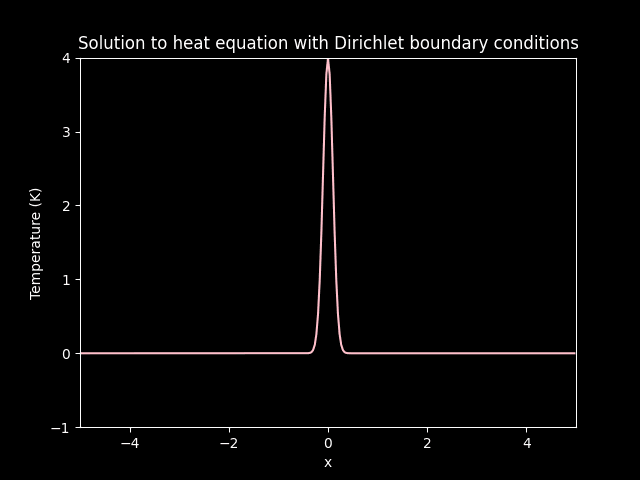
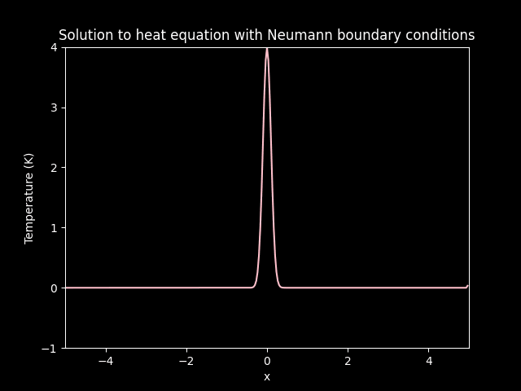

%load_ext autoreload
%autoreload 2
One Dimensional Heat Equation#
%matplotlib inline
import numpy as np
import matplotlib.pyplot as plt
import matplotlib.animation as animation
plt.style.use("dark_background")
import sys, os
sys.path.append(os.path.abspath(os.path.join('..')))
import diffuconpy as dc
import animations
The One dimensional Diffusion Model is governed by the following pde:
Which initial condition:
Solving this model numerically one would have to discretize this model.
See source code diffuconpy to see the full implementation of this discretization.
To model the Diffusion Equation, one must consider the number of step the model will advance in time Nt = 250 and space Nx = 300. Also \(\Delta t\) which is dt = 1/Nt in the code below and \(\Delta x\) which is dx = (5-(-5)/Nx). the boundary points on this plot are \(-5\) and \(5\), at which the initial function is \(0\). the Diffusion coefficient diffusion is \(0.08\).
The solution to this equation is the temperature (Kelvin) of a space at a time (t).
# Numbers of space and time steps
Nt = 250
Nx = 300
# Space and time step size
dt = (1-0)/Nt
dx = (5-(-5))/Nx
# Convection Coefficient
diffusion = 0.08
# Setting up the initial condition
x = np.arange(-5, 5, dx)
# Initial Array
sigma = 0.01
amp = 1
init = amp*(1/np.sqrt(sigma*2*np.pi))*np.exp(-(1/2)*((x**2)/sigma))
Boundary Conditions#
Dirichlet#
For 1 dimensional diffusion, the Dirichlet boundary conditions take the following form
For all \(t>0\) and boundary points \(x_0\) and \(x_1\). In this example, let \(u_0 = u_1 = 0\).
Neumann#
The Neumann boundary conditions for 1 dimensional diffusion are defined as
For all \(t>0\). for this example, let \(u^{\prime}_0 = u^{\prime}_1 = 0\), or say there is zero ‘flux’ in the boundary.
Solving the PDE#
def solve(Nt, Nx, dt, dx, diffusion, init):
heat_equation = dc.diffusion_1dims(Nt, Nx, dt, dx, diffusion, init)
sol_Dirichlet = heat_equation.solve_Dirichlet(boundary=[0, 0])
sol_Neumann = heat_equation.solve_Neumann(boundary_flux=[0, 0])
return sol_Dirichlet.solution, sol_Neumann.solution
dirichlet, neumann = solve(Nt, Nx, dt, dx, diffusion, init)
Plotting the initial condition#
# Plotting the 0th time step state
plt.figure(0)
ax = plt.axes(xlim=(-5, 5), ylim=(-1, 4)) # left bound -5 and right bound 5
ax.plot(x, dirichlet[0], color='pink')
plt.title('Solution at the 0th time step')
plt.xlabel('x')
plt.ylabel('Temperature (K)')
plt.show()
# Plotting the 0th time step state
plt.figure(1)
ax = plt.axes(xlim=(-5, 5), ylim=(-1, 4)) # left bound -5 and right bound 5
ax.plot(x, neumann[0], color='pink')
plt.title('Solution at the 0th time step')
plt.xlabel('x')
plt.ylabel('Temperature (K)')
plt.show()
Animating the Solution#
# Setting up the animation
FPS = 60
FRN = 250
FILE_1 = './img/diffusion_in_1_dimension_dirichlet.gif'
FILE_2 = './img/diffusion_in_1_dimension_neumann.gif'
# Calling the animation function.
# See the animation at ./example-img/convection_in_1_dimension.gif
animations.animation_1(
solution=dirichlet,
X=x,
xlab='x',
ylab='Temperature (K)',
title='Solution to heat equation with Dirichlet boundary conditions',
color='pink',
xlim_=(-5, 5),
ylim_=(-1, 4),
fps=FPS,
frn=FRN,
filename=FILE_1
)
animations.animation_1(
solution=neumann,
X=x,
xlab='x',
ylab='Temperature (K)',
title='Solution to heat equation with Neumann boundary conditions',
color='pink',
xlim_=(-5, 5),
ylim_=(-1, 4),
fps=FPS,
frn=FRN,
filename=FILE_2
)

Diffusion on Dirichlet boundary conditions.

Diffusion on Neumann boundary conditions.